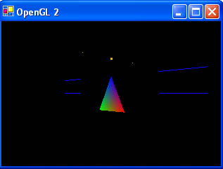

C# + OpenGL 2.: Igranje s transformaciji
Po dolgem času obotavljanja in iskanja izgovorov zakaj za vraga ne napišem nadaljevanja članka sem končno uspel najti čas in spisati tole kratko nadaljevanje.
Nekateri ste že slišali moje godrnanje čez nesposobnost mene delanja backupov... Spet godrnjam? Eh kaj vi ne bi, ko bi vam format c: pohrustal tudi 6 strani Wordov dokument z mnogo lepimi slikicami in naslovom OpenGL Pipeline?
No, pustimo to. Zadovoljiti se boste morali s tem člančičem, ki vam bo prikazal nekaj različnih osnovnih elementov grafike. Črte, pike, trikotnike in poligone. To vsekakor niso vse zmožnosti OpenGLa, se da pa z le-temi pričarati čuda stvari.
Predno začnemo s tem mini nadaljevanjem, naj vas opozorim, da je ta članek namenjen popolnim začetnikom v OpenGLu, morda še celo njim ne. Je pa vsekakor dobro ga vzeti pod drobnogled in poskusiti premakniti kakšno stvar, spremeniti kakšno številko in predvsem dodati kaj svojega.
Za začetek že vsem znani del...
private void Draw() { /// Izbrise color in depth buffer. Gl.glClear(Gl.GL_COLOR_BUFFER_BIT | Gl.GL_DEPTH_BUFFER_BIT); /// V trenutno matriko (modelview) nalozi identity /// matriko, kar naso sceno postavi v koordinatno izhodisce. Gl.glLoadIdentity(); /// Premakne sceno za 10 enot v ekran. Gl.glTranslatef(0,0,-10); /// Zavrti sceno okrog Y osi za kot angle. Gl.glRotatef(angle, 0,1,0); angle +=0.1f; // povecamo kot if(angle>360.0f) // ce je vecji od 360° angle = 0.0f; // ga nastavimo na nic.
Sedaj pa narišimo nek lepo obarvan trikotnik.
/// Izrišemo en trikotnik
Gl.glBegin(Gl.GL_TRIANGLES);
Gl.glColor3f(1, 0, 0); // prvo ogljišce je pobarvano rdece...
Gl.glVertex3f(-1, -1, 0);
Gl.glColor3f(0, 1, 0); // drugo zeleno...
Gl.glVertex3f(1, -1, 0);
Gl.glColor3f(0, 0, 1); // tretje pa modro.
Gl.glVertex3f(0, 1, 0);
Gl.glEnd();
Kot ste verjetno opazili, smo vsako ogljišče trikotnika pobarvali s svojo barvo. Če pa že pokukali kako to izgleda v praksi pa ste verjetno ugotovili, da se barve ena med drugo lepo prelivajo (interpolirajo med seboj).
Sedaj pridejo na vrsto štiri nepovezane črte. Nepovezano črto loči par dveh ogljišč. Torej v našem primeru, ko smo OpenGLu poslali štiri ogljišča in delu naše grafične kartice (ta del se imenuje Primitive Assembly - za nas skupaj zlaga ta ogljišča v določene like) povedali, da naj jih smatra kot črte, bodo na ekranu končale štiri ravne, vrteče (zaradi zgornjega glRotatef) črte.
/// Narišimo še štiri nepovezane crte.
Gl.glBegin(Gl.GL_LINES);
Gl.glVertex3f(3.0f, 0, 0);
Gl.glVertex3f(5.0f, 0, 0);
Gl.glVertex3f(3.0f, 1.0f, 0);
Gl.glVertex3f(5.0f, 1.0f, 0);
Gl.glVertex3f(-3.0f, 0, 0);
Gl.glVertex3f(-5.0f, 0, 0);
Gl.glVertex3f(-3.0f, 1.0f, 0);
Gl.glVertex3f(-5.0f, 1.0f, 0);
Gl.glEnd();
Če vas je presenetilo dejstvo, da je barva črt modra, naj vam povem, da si računalnik stvari ne izmišljuje in da vedno ko kaj ni tako kot pričakujete, ste zagotovo krivi vi ;)
No, da ne boste mislili, kaj ste za**khm*... OpenGL je kot barvo teh črt vzel zadnjo barvo, ki ste mu jo določili. Torej zgoraj pri trikotniku je bila to modra barva.
Predstavljajte si OpenGL kot en velik State machine (avtomat stanj)... kjer neko stvar vklopite, naredite nekaj stvari, spremenite stanje (izklopite, ali naredite kaj tretjega)... OpenGL je točno to. En hudo velik state machine. In ko ste spremenili barvo v modro, ste to barvo pustili prižgano, in tako bo OpenGL risal v tej barvi dokler spet ne spremenite barve.
Sedaj pa narišimo še piko ali tri.
Kot se vam je verjetno posvetilo do sedajle, služi glPointSize nastavitvi velikosti pike. Na 1, ki je običajo privzeta velikost, jo nastavimo zato, ker bomo nekaj vrstic nižje nastavili na 3 in bi nas, v primeru, da na 1 ne bi nastavili, zafrkavalo podobno dejstvo, kot zgoraj pri barvah... Velikost 3 bi ostala v naslednji sliki, in vse pike na ekranu bi končale velike 3 (mi pa tega nočemo;)).
/// Ter nekaj pik.
Gl.glPointSize(1);
Gl.glColor3f(0.9f,0.7f,0); // oranžne barve
Gl.glBegin(Gl.GL_POINTS);
Gl.glVertex3f(0,2,2);
Gl.glVertex3f(0,2,-2);
Gl.glEnd();
/// Še ena malce vecja pika...
Gl.glPointSize(3);
Gl.glBegin(Gl.GL_POINTS);
Gl.glVertex3f(0,2,0);
Gl.glEnd();
Gl.glFlush(); // Down the drain we go.
}
In to bi bilo za danes to.

Do naslednjič pa se poigrajte s trikotniki in poizkusite skupaj spraviti kakšno zanimivo sceno. Morda pa si poglejte še Gl.GL_QUADS, ki nam pomaga pri risanju kvadratov (ogljišča morajo nastopati v skupkih po štiri.Happy codin'.
ps. Še izvorna koda programa [klik]